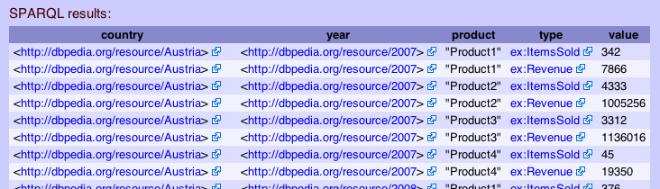

<!DOCTYPE html PUBLIC "-//W3C//DTD HTML 4.01 Transitional//EN" "http://www.w3.org/TR/html4/loose.dtd">
<html>
<head>
	<meta http-equiv="Content-Type" content="text/html; charset=UTF-8">
	<title>XLWrap &ndash; Mapping Design Patterns</title>
	<link rel="stylesheet" title="default style" href="styles.css"/>
</head>
<body>

<div id="pagebox">
<h1>XLWrap &ndash; Mapping Design Patterns</h1>

<p><a href="index.html#patterns">Back to main page</a></p>
 
<h2>Index</h2>

<p>Based on feedback from users we are collecting different use cases and sample mappings on this page. This is work-in-progress.</p>

<ol>
	<li><a href="#flat">Mapping flat tables</a></li>
	<li><a href="#cross">Mapping multi-dimensional cross tables</a> to RDF based on <a href="http://purl.org/NET/scovo">SCOVO</a></li>
	<li><a href="#hierarchies">Mapping hierarchies</a></li>
	<li><a href="#collection">Mapping a collection of spreadsheets</a> with external cell references</li>
	<li><a href="#mappingtodbp">Mapping to DBpedia</a> using <code>DBP_*</code> functions</li>
	<li>...more to come...</li>
</ol>

<h2><a name="flat">Mapping flat tables</a></h2>

<p>Wrapping flat tables is actually easy. A typical use case is to create one RDF instance per row which can be done by a single 
template with a single row or column shift operation. Consider the following table:</p>

<table>
<tr style="border-bottom: 1px solid black">
	<th class="vh">&nbsp;</th>
	<th class="h">A</th>
	<th class="h">B</th>
	<th class="h">C</th>
</tr>
<tr>
	<th class="v">1</th>
	<td>First name</td>
	<td>Second name</td>
	<td>E-Mail address</td>
</tr>
<tr>
	<th class="v">2</th>
	<td style="background-color: yellow">Tom</td>
	<td style="background-color: lightblue">Houston</td>
	<td style="background-color: lightgreen">th@ex.com</td>
</tr>
<tr>
	<th class="v">3</th>
	<td>Tim</td>
	<td>Presley</td>
	<td>jp@ex.com</td>
</tr>
<tr>
	<th class="v">4</th>
	<td>...</td>
	<td>...</td>
	<td>...</td>
</tr>
</table>

<pre style="white-space: normal">
{ [] a xl:Mapping ;<br />
&nbsp;&nbsp;&nbsp;	xl:template [<br />
&nbsp;&nbsp;&nbsp;&nbsp;&nbsp;&nbsp;		xl:fileName &quot;file:employees.xls&quot; ;<br />
&nbsp;&nbsp;&nbsp;&nbsp;&nbsp;&nbsp;		xl:templateGraph :Persons ;<br />
&nbsp;&nbsp;&nbsp;&nbsp;&nbsp;&nbsp;		<strong>xl:transform [ a xl:RowShift ]</strong><br />
&nbsp;&nbsp;&nbsp;	] .<br />
}<br />
<br />
:Persons {<br />
&nbsp;&nbsp;&nbsp;	[ xl:uri &quot;'http://example.org/' &amp; URLENCODE(<span style="background-color: yellow">A2</span> &amp; <span style="background-color: lightblue">B2</span>)&quot;^^xl:Expr ] a foaf:Person ;<br />
&nbsp;&nbsp;&nbsp;	foaf:name          &quot;<span style="background-color: yellow">A2</span> &amp; ' ' &amp; <span style="background-color: lightblue">B2</span>&quot;^^xl:Expr ;<br />
&nbsp;&nbsp;&nbsp;	foaf:mbox_sha1sum  &quot;SHA(<span style="background-color: lightgreen">C2</span>)&quot;^^xl:Expr ;<br />
}
</pre>

<p>
The example above shows only the minimal required mapping elements. The default sheet is the first sheet of the specified spreadsheet. Instead of specifying multiple
transform operations in a RDF sequence, it is allowed to specify a single transformation without rdf:Seq. The default transform step of a row or column shift is 1 row/column,
the default xl:breakCondition is always <em>false</em> and the default xl:restrict is <code>*.*</code> (see <a href="index.html#mappingspec">mapping specification section</a> of the documentation).
</p>

<h3>Range references and custom functions</h3>

<p>
<a href="index.html#rangerefs">Range references</a> as part of the template graph can refer to any cell of the sheet and also to other possibly external files and sheets. Additional functions can be <a href="index.html#functions">easily added</a> as required.
</p>


<h2><a name="cross">Mapping Multi-dimensional cross tables</a></h2>

<p>In order to wrap multi-dimensional cross tables, you first need to carefully inspect your spreadsheet. In particular, you will need to know:</p>

<ul>
<li><strong>what information</strong> it contains and</li>
<li><strong>how it is represented</strong> (how many files and sheets, how it is oriented, possibly multiple n x m tables in on one worksheet, pivot tables, etc.).</li>
</ul>

<p>You should then decide about the structure of the output graph which should best reflect the information model contained in the spreadsheet.
The target graph and the way how information is represented in the spreadsheet will determine the mapping specification.</p>

<p><strong>We suggest to first model the desired output graph and then specify the required transformation operations.</strong></p>

<h3>1. Modeling the desired output graph</h3>

<p>A typical use case is <em>one instance per cell</em> with properties for all the different dimensions.
Consider the following simple cross table which represents <span style="background-color:pink">revenues</span> 
and sold items of a company per <span style="background-color:lightblue">year</span>, <span style="background-color: yellow">country</span>, 
and <span style="background-color:lightgreen">product</span>:</p>

<br />
<p>Sheet name in workbook: <strong>Austria</strong> (note that for CSV files there are no sheet names, just one sheet with sheet number <code>0</code>).</p>
<table>
<tr>
	<th class="vh">&nbsp;</th>
	<th class="h" style="width: 80px">A</th>
	<th class="h" style="width: 100px">B</th>
	<th class="h" style="width: 100px">C</th>
	<th class="h" style="width: 100px">D</th>
	<th class="h" style="width: 100px">E</th>
	<th class="h" style="width: 100px">F</th>
	<th class="h" style="width: 100px">G</th>
	<th class="h" style="width: 100px">H</th>
</tr>			
<tr>
	<th class="v">1</th>
	<td style="background-color: yellow">Austria</td>
	<td>&nbsp;</td>
	<td>&nbsp;</td>
	<td>&nbsp;</td>
	<td>&nbsp;</td>
	<td>&nbsp;</td>
	<td>&nbsp;</td>
	<td>&nbsp;</td>
</tr>					
<tr>
	<th class="v">2</th>
	<td style="border-right: 1px solid black">&nbsp;</td>
	<td style="border-bottom: 1px solid black; background-color: lightblue">2007</td>
	<td style="border-bottom: 1px solid black; border-right: 1px solid black">&nbsp;</td>
	<td style="border-bottom: 1px solid black">2008</td>
	<td style="border-bottom: 1px solid black; border-right: 1px solid black">&nbsp;</td>
	<td style="border-bottom: 1px solid black">2009</td>
	<td style="border-bottom: 1px solid black; border-right: 1px solid black">&nbsp;</td>
	<td style="border-bottom: 1px solid black">...</td>
</tr>
<tr>
	<th class="v">3</th>
	<td style="border-bottom: 1px solid black; border-right: 1px solid black">product</td>
	<td style="border-bottom: 1px solid black">items sold</td>
	<td style="border-bottom: 1px solid black; border-right: 1px solid black">revenue</td>
	<td style="border-bottom: 1px solid black">items sold</td>
	<td style="border-bottom: 1px solid black; border-right: 1px solid black">revenue</td>
	<td style="border-bottom: 1px solid black">items sold</td>
	<td style="border-bottom: 1px solid black; border-right: 1px solid black">revenue</td>
	<td style="border-bottom: 1px solid black">...</td>
</tr>
<tr>
	<th class="v">4</th>
	<td style="background-color: lightgreen; border-right: 1px solid black">Product 1</td>
	<td style="text-align:right">342</td>
	<td style="text-align:right; border-right: 1px solid black; background-color: pink">&euro; 7.866,00</td>
	<td style="text-align:right">376</td>
	<td style="text-align:right; border-right: 1px solid black">&euro; 8.648,00</td>
	<td style="text-align:right">490</td>
	<td style="text-align:right; border-right: 1px solid black">&euro; 11.760,00</td>
	<td>...</td>
</tr>
<tr>
	<th class="v">5</th>
	<td style="border-right: 1px solid black">Product 2</td>
	<td style="text-align:right">4333</td>
	<td style="text-align:right; border-right: 1px solid black">&euro; 1.005.256,00</td>
	<td style="text-align:right">5655</td>
	<td style="text-align:right; border-right: 1px solid black">&euro; 1.328.925,00</td>
	<td style="text-align:right">3493</td>
	<td style="text-align:right; border-right: 1px solid black">&euro; 838.320,00</td>
	<td>...</td>
</tr>
<tr>
	<th class="v">6</th>
	<td style="border-right: 1px solid black">...</td>
	<td>...</td>
	<td style="border-right: 1px solid black">...</td>
	<td>...</td>
	<td style="border-right: 1px solid black">...</td>
	<td>...</td>
	<td style="border-right: 1px solid black">...</td>
	<td>...</td>
</tr>
</table>
<br />

<p>A simple RDF model accurately reflecting this information would be a graph with instances like the following:</p> 

<p><strong>Simple example output graph:</strong></p>
<pre style="white-space: normal">
  ex:revenue_Austria_2007_Product1<br/>
&nbsp;&nbsp;&nbsp;      a       ex:Revenue ;<br/>
&nbsp;&nbsp;&nbsp;      ex:country <span style="background-color: yellow">&quot;Austria&quot;</span> ;<br/>
&nbsp;&nbsp;&nbsp;      ex:year <span style="background-color: lightblue">&quot;2007&quot;</span> ;<br/>
&nbsp;&nbsp;&nbsp;      ex:product <span style="background-color: lightgreen">&quot;Product x&quot;</span> ;<br/>
&nbsp;&nbsp;&nbsp;      ex:revenue <span style="background-color: pink">&quot;7866&quot;^^&lt;http://www.w3.org/2001/XMLSchema#int&gt;</span> .<br/>
</pre>

<p>For each dimension, you will create a transform operation which shifts parts of the base template graph around in your sheet, 
workbook, or even over multiple files as we will show later.</p>

<p>But consider you want to map the above table to a RDF graph based on <a href="http://purl.org/NET/scovo" target="_blank">SCOVO</a>, the <em>Statistical Core Vocabulary</em>.
Again, we start by designing the target graph. Based on SCOVO, the graph should look like this:</p>

<p><strong>SCOVO output graph:</strong></p>
<pre style="white-space: normal">
<span style="border-bottom: 2px orange solid">ex:theDataset</span> a scv:Dataset ;<br />
&nbsp;&nbsp;&nbsp;	dc:title    &quot;Revenues of Example, Inc. per year, country, and products&quot; ;<br />
&nbsp;&nbsp;&nbsp;	dc:creator  &quot;you...&quot; ;<br />
&nbsp;&nbsp;&nbsp;	dc:date     &quot;2009-06-12 19:34:12Z&quot;^^xsd:dateTime .<br />
<br />
ex:Revenue    a scv:Item .<br />
<span style="border-bottom: 2px yellow solid">ex:Country  [ rdfs:label &quot;Country&quot; ; rdfs:subClassOf scv:Dimension ]</span> .<br />
<span style="border-bottom: 2px lightblue solid">ex:Year     [ rdfs:label &quot;Year&quot; ; rdfs:subClassOf scv:Dimension ]</span> .<br />
<span style="border-bottom: 2px lightgreen solid">ex:Product  [ rdfs:label &quot;Product&quot; ; rdfs:subClassOf scv:Dimension ]</span> .<br />
<br />
ex:Revenue_Austria_2007_Product1<br/>
&nbsp;&nbsp;&nbsp;      a       ex:Revenue ;<br/>
&nbsp;&nbsp;&nbsp;      scv:dataset <span style="border-bottom: 2px orange solid">ex:theDataset</span> ;<br />
&nbsp;&nbsp;&nbsp;      scv:dimension <span style="border-bottom: 2px yellow solid">ex:Austria</span> ;<br/>
&nbsp;&nbsp;&nbsp;      scv:dimension <span style="border-bottom: 2px lightblue solid">ex:2007</span> ;<br/>
&nbsp;&nbsp;&nbsp;      scv:dimension <span style="border-bottom: 2px lightgreen solid">ex:Product1</span> ;<br/>
&nbsp;&nbsp;&nbsp;      rdf:value <span style="line-height: 19px; background-color: pink">&quot;7866&quot;^^&lt;http://www.w3.org/2001/XMLSchema#int&gt;</span> . <br/>
ex:Revenue_Austria_2007_Product2<br/>
&nbsp;&nbsp;&nbsp;      a       ex:Revenue ;<br/>
&nbsp;&nbsp;&nbsp;      scv:dataset <span style="border-bottom: 2px orange solid">ex:theDataset</span> ;<br />
&nbsp;&nbsp;&nbsp;      scv:dimension <span style="border-bottom: 2px yellow solid">ex:Austria</span> ;<br/>
&nbsp;&nbsp;&nbsp;      scv:dimension <span style="border-bottom: 2px lightblue solid">ex:2007</span> ;<br/>
&nbsp;&nbsp;&nbsp;      scv:dimension <span style="border-bottom: 2px lightgreen solid">ex:Product2</span> ; # after first row shift<br/>
&nbsp;&nbsp;&nbsp;      rdf:value <span style="line-height: 19px; background-color: pink">&quot;1005256&quot;^^&lt;http://www.w3.org/2001/XMLSchema#int&gt;</span> . <br/>
...<br />
<span style="border-bottom: 2px yellow solid">ex:Austria a ex:Country ; rdfs:label <span style="background-color: yellow">&quot;Austria&quot;</span> ; owl:sameAs &lt;http://dbpedia.org/resource/<span style="background-color: yellow">Austria</span>&gt</span> .<br />
<span style="border-bottom: 2px lightblue solid">ex:2007 a ex:Year ; rdfs:label <span style="background-color: lightblue">&quot;2007&quot;</span> ; owl:sameAs &lt;http://dbpedia.org/resource/<span style="background-color: lightblue">2007</span>&gt</span> .<br />
<span style="border-bottom: 2px lightgreen solid"><span style="background-color: lightgreen">ex:Product1</span> a ex:Product ; rdfs:label <span style="background-color: lightgreen">&quot;Product1&quot;</span></span> .<br />
<span style="border-bottom: 2px lightgreen solid"><span style="background-color: lightgreen">ex:Product2</span> a ex:Product ; rdfs:label <span style="background-color: lightgreen">&quot;Product2&quot;</span></span> .<br />
...
</pre>

<p>In order to model the required meta data, such as the <code>scv:Dataset</code>, the <code>ex:Revenue</code>, and the three SCOVO dimensions, 
we will need a constant graph (property <code>xl:constantGraph</code>) and one template graph which generates the instances of <code>ex:Revenue</code>, 
which is a <code>scv:Item</code>.</p>

<p>The table again:</p>

<p>Sheet name in workbook: <strong>Austria</strong> (note that for CSV files there are no sheet names, just one sheet with sheet number <code>0</code>).</p>
<table>
<tr>
	<th class="vh">&nbsp;</th>
	<th class="h" style="width: 80px">A</th>
	<th class="h" style="width: 100px">B</th>
	<th class="h" style="width: 100px">C</th>
	<th class="h" style="width: 100px">D</th>
	<th class="h" style="width: 100px">E</th>
	<th class="h" style="width: 100px">F</th>
	<th class="h" style="width: 100px">G</th>
	<th class="h" style="width: 100px">H</th>
</tr>			
<tr>
	<th class="v">1</th>
	<td style="background-color: yellow">Austria</td>
	<td>&nbsp;</td>
	<td>&nbsp;</td>
	<td>&nbsp;</td>
	<td>&nbsp;</td>
	<td>&nbsp;</td>
	<td>&nbsp;</td>
	<td>&nbsp;</td>
</tr>					
<tr>
	<th class="v">2</th>
	<td style="border-right: 1px solid black">&nbsp;</td>
	<td style="border-bottom: 1px solid black; background-color: lightblue">2007</td>
	<td style="border-bottom: 1px solid black; border-right: 1px solid black">&nbsp;</td>
	<td style="border-bottom: 1px solid black">2008</td>
	<td style="border-bottom: 1px solid black; border-right: 1px solid black">&nbsp;</td>
	<td style="border-bottom: 1px solid black">2009</td>
	<td style="border-bottom: 1px solid black; border-right: 1px solid black">&nbsp;</td>
	<td style="border-bottom: 1px solid black">...</td>
</tr>
<tr>
	<th class="v">3</th>
	<td style="border-bottom: 1px solid black; border-right: 1px solid black">product</td>
	<td style="border-bottom: 1px solid black">items sold</td>
	<td style="border-bottom: 1px solid black; border-right: 1px solid black">revenue</td>
	<td style="border-bottom: 1px solid black">items sold</td>
	<td style="border-bottom: 1px solid black; border-right: 1px solid black">revenue</td>
	<td style="border-bottom: 1px solid black">items sold</td>
	<td style="border-bottom: 1px solid black; border-right: 1px solid black">revenue</td>
	<td style="border-bottom: 1px solid black">...</td>
</tr>
<tr>
	<th class="v">4</th>
	<td style="background-color: lightgreen; border-right: 1px solid black">Product 1</td>
	<td style="text-align:right">342</td>
	<td style="text-align:right; border-right: 1px solid black; background-color: pink">&euro; 7.866,00</td>
	<td style="text-align:right">376</td>
	<td style="text-align:right; border-right: 1px solid black">&euro; 8.648,00</td>
	<td style="text-align:right">490</td>
	<td style="text-align:right; border-right: 1px solid black">&euro; 11.760,00</td>
	<td>...</td>
</tr>
<tr>
	<th class="v">5</th>
	<td style="border-right: 1px solid black">Product 2</td>
	<td style="text-align:right">4333</td>
	<td style="text-align:right; border-right: 1px solid black">&euro; 1.005.256,00</td>
	<td style="text-align:right">5655</td>
	<td style="text-align:right; border-right: 1px solid black">&euro; 1.328.925,00</td>
	<td style="text-align:right">3493</td>
	<td style="text-align:right; border-right: 1px solid black">&euro; 838.320,00</td>
	<td>...</td>
</tr>
<tr>
	<th class="v">6</th>
	<td style="border-right: 1px solid black">...</td>
	<td>...</td>
	<td style="border-right: 1px solid black">...</td>
	<td>...</td>
	<td style="border-right: 1px solid black">...</td>
	<td>...</td>
	<td style="border-right: 1px solid black">...</td>
	<td>...</td>
</tr>
</table>
<br />

<p>A valid SCOVO mapping could look like this:</p>

<p><strong>SCOVO constant graph part:</strong></p>
<pre style="white-space: normal">
&lt;&gt; owl:import scv: .		# import the SCOVO vocabulary<br />
<br />
	[ xl:uri "MAKEURI(<span style="border-bottom: 2px orange solid">'theDataset'</span>)"^^xl:Expr ] a scv:Dataset ;<br />
&nbsp;&nbsp;&nbsp;	dc:title    &quot;Revenues of Example, Inc. per year, country, and products" ;<br />
&nbsp;&nbsp;&nbsp;	dc:creator  &quot;you&quot; ;<br />
&nbsp;&nbsp;&nbsp;	dc:date     &quot;NOW()&quot;^^xl:Expr .<br />
<br />	
	ex:Revenue    a scv:Item .<br />
<span style="border-bottom: 2px yellow solid">	ex:Country  [ rdfs:label &quot;Country&quot; ; rdfs:subClassOf scv:Dimension ]</span> .<br />
<span style="border-bottom: 2px lightblue solid">	ex:Year     [ rdfs:label &quot;Year&quot; ; rdfs:subClassOf scv:Dimension ]</span> .<br />
<span style="border-bottom: 2px lightgreen solid">	ex:Product  [ rdfs:label &quot;Product&quot; ; rdfs:subClassOf scv:Dimension ]</span> .<br />
</pre>

<p><strong>SCOVO template graph:</strong></p>
<pre style="white-space: normal">
[ xl:uri &quot;MAKEURI('Revenue_' &amp; SHEETNAME(A1) &amp; '_' &mp; B2 &amp; '_' &amp; A4)&quot;^^xl:Expr ] a ex:Revenue ;<br />
&nbsp;&nbsp;&nbsp;		scv:dataset [ xl:uri "MAKEURI(<span style="border-bottom: 2px orange solid">'theDataset'</span>)"^^xl:Expr ] ;<br />
&nbsp;&nbsp;&nbsp;		scv:dimension [ xl:uri &quot;MAKEURI(SHEETNAME(<span style="background-color: yellow">A1</span>))&quot;^^xl:Expr ; a ex:Country ; rdfs:label &quot;<span style="background-color: yellow">A1</span>&quot;^^xl:Expr ; owl:sameAs &quot;DBP_COUNTRY(<span style="background-color: yellow">A1</span>)&quot;^^xl:Expr ] ;<br />
&nbsp;&nbsp;&nbsp;		scv:dimension [ xl:uri &quot;MAKEURI(<span style="background-color: lightblue">B2</span>)&quot;^^xl:Expr ; a ex:Year ; rdfs:label &quot;<span style="background-color: lightblue">B2</span>&quot;^^xl:Expr ; owl:sameAs &quot;DBP_YEAR(<span style="background-color: lightblue">B2</span>)&quot;^^xl:Expr ] ;<br />
&nbsp;&nbsp;&nbsp;		scv:dimension [ xl:uri &quot;MAKEURI(<span style="background-color: lightgreen">A4</span>)&quot;^^xl:Expr ; a ex:Product ; rdfs:label &quot;<span style="background-color: lightgreen">A4</span>&quot;^^xl:Expr ] ;<br />
&nbsp;&nbsp;&nbsp;		rdf:value    &quot;<span style="background-color: pink">B4</span>&quot;^^xl:Expr .<br />
}
</pre>

<p>As explained in the <a href="index.html#urisbnodes">documentation</a>, it is possible to create URI nodes or to ensure that blank nodes get equal 
labels in the target graph using <code>xl:uri</code> and <code>xl:id</code>. Because each revenue should be linked with the same SCOVO dimension instance
in the output graph, this mechanisms is applied in the example above. Likewise, all revenue instances are linked to the same SCOVO dataset identified by
<code><span style="border-bottom: 2px orange solid">ex:theDataset</span></code>.</p>

<p>This template graph without any transform operations would be applied just once leading to only one instance of <code>ex:Revenue</code>. In order to apply
it multiple times while shifting around parts of the range references, we need to specify transform operations.</p>

<p><strong>Adding a mapping for the sold items</strong></p>

<p>If we also want to map the number of sold items, which has equal dimensions we can do this by simple adding the statement:</p>

<pre>
	ex:ItemsSold    a scv:Item .
</pre>

<p>to the constant graph and the following to the template graph:</p>

<pre style="white-space: normal">
[ xl:uri &quot;MAKEURI('<strong>ItemsSold</strong>_' &amp; SHEETNAME(A1) &amp; '_' &mp; B2 &amp; '_' &amp; A4)&quot;^^xl:Expr ] a <strong>ex:ItemsSold</strong> ;<br />
&nbsp;&nbsp;&nbsp;		scv:dataset [ xl:uri "MAKEURI(<span style="border-bottom: 2px orange solid">'theDataset'</span>)"^^xl:Expr ] ;<br />
&nbsp;&nbsp;&nbsp;		scv:dimension [ xl:uri &quot;MAKEURI(SHEETNAME(<span style="background-color: yellow">A1</span>))&quot;^^xl:Expr ; a ex:Country ; rdfs:label &quot;<span style="background-color: yellow">A1</span>&quot;^^xl:Expr ; owl:sameAs &quot;DBP_COUNTRY(<span style="background-color: yellow">A1</span>)&quot;^^xl:Expr ] ;<br />
&nbsp;&nbsp;&nbsp;		scv:dimension [ xl:uri &quot;MAKEURI(<span style="background-color: lightblue">B2</span>)&quot;^^xl:Expr ; a ex:Year ; rdfs:label &quot;<span style="background-color: lightblue">B2</span>&quot;^^xl:Expr ; owl:sameAs &quot;DBP_YEAR(<span style="background-color: lightblue">B2</span>)&quot;^^xl:Expr ] ;<br />
&nbsp;&nbsp;&nbsp;		scv:dimension [ xl:uri &quot;MAKEURI(<span style="background-color: lightgreen">A4</span>)&quot;^^xl:Expr ; a ex:Product ; rdfs:label &quot;<span style="background-color: lightgreen">A4</span>&quot;^^xl:Expr ] ;<br />
&nbsp;&nbsp;&nbsp;		rdf:value    &quot;<span style="background-color: pink">B4</span>&quot;^^xl:Expr .<br />
}
</pre>

<p>We will show the complete mapping <a href="#completescovo">below</a>.</p>

<h3>2. Modeling the transformations</h3>

<p>There are often multiple ways how to shift and repeat template graphs. For our example, we first use a <strong>row shift</strong> to apply the template for all the products.
This involves shifting down the range references <code style="background-color: lightgreen">A4</code> and <code style="background-color: pink">C4</code> as long as the
condition <code>LEFT(<span style="background-color: lightgreen">A4</span>, 7) != 'Product'&quot;</code> holds. Another option would be to specify the number of
repeat iterations (<code>xl:repeat "10"</code>). However, since different sub-tables may have different numbers of rows, using conditions is often better.</p>

<p>The second transform is a column shift, which shifts <code style="background-color: lightgreen">B2</code> and <code style="background-color: pink">C4</code> by 2 columns
to the right as long as <code style="background-color: pink">C4</code> is not empty.</p>

<pre style="white-space: normal">
xl:transform [<br />
&nbsp;&nbsp;&nbsp;	a rdf:Seq ;<br />
&nbsp;&nbsp;&nbsp;	rdf:_1 [<br />
&nbsp;&nbsp;&nbsp;&nbsp;&nbsp;&nbsp;		a xl:RowShift ;<br />
&nbsp;&nbsp;&nbsp;&nbsp;&nbsp;&nbsp;		xl:restriction &quot;<span style="background-color: lightgreen">A4</span>; <span style="background-color: pink">C4</span>&quot; ;<br />
&nbsp;&nbsp;&nbsp;&nbsp;&nbsp;&nbsp;		xl:breakCondition &quot;LEFT(<span style="background-color: lightgreen">A4</span>, 7) != 'Product'&quot; ;<br />
&nbsp;&nbsp;&nbsp;&nbsp;&nbsp;&nbsp;		xl:steps &quot;1&quot; ;<br />
&nbsp;&nbsp;&nbsp;	] ;<br />
&nbsp;&nbsp;&nbsp;	rdf:_2 [<br />
&nbsp;&nbsp;&nbsp;&nbsp;&nbsp;&nbsp;		a xl:ColShift ;<br />
&nbsp;&nbsp;&nbsp;&nbsp;&nbsp;&nbsp;		xl:restriction &quot;<span style="background-color: lightblue">B2</span>; <span style="background-color: pink">C4</span>&quot;^^xl:Expr ;<br />
&nbsp;&nbsp;&nbsp;&nbsp;&nbsp;&nbsp;		xl:breakCondition &quot;ALLEMPTY(<span style="background-color: pink">C4</span>)&quot; ;<br />
&nbsp;&nbsp;&nbsp;&nbsp;&nbsp;&nbsp;		xl:steps &quot;2&quot; ;<br />
&nbsp;&nbsp;&nbsp;	] ;<br />
]
</pre>

<p>If we had another sheet with similar data, we could add another transform operation to shift and apply the template graph to them:</p>

<pre style="white-space: normal">
&nbsp;&nbsp;&nbsp;	rdf:_3 [<br />
&nbsp;&nbsp;&nbsp;&nbsp;&nbsp;&nbsp;		a xl:SheetShift ;<br />
&nbsp;&nbsp;&nbsp;&nbsp;&nbsp;&nbsp;		xl:restriction &quot;#1.*&quot;^^xl:Expr ;<br />
&nbsp;&nbsp;&nbsp;&nbsp;&nbsp;&nbsp;		xl:repeat &quot;2&quot;<br />
&nbsp;&nbsp;&nbsp;	] ;<br />
</pre>


<a name="completescovo"><p>Here is the complete mapping specification of our example:</p></a>

<iframe class="code" src="http://xlwrap.svn.sourceforge.net/viewvc/xlwrap/xlwrap/trunk/mappings/iswc09-example-scovo.trig?revision=56" style="width:100%; height:300px">
</iframe>

<p>The mapping file contains an (anonymous) instance of <a href="http://purl.org/NET/xlwrap#Mapping">xl:Mapping</a> in the default graph defining the 
example spreadsheet. There is one map template, which generates a SCOVO graph for the revenue cross table. The base workbook file 
(<a href="http://purl.org/NET/xlwrap#fileName">xl:fileName</a>) and the sheet number (<a href="http://purl.org/NET/xlwrap#sheetNumber">xl:sheetNumber</a>) are 
specified first. A constant graph called <code>:SCOVODataset</code> is specified, which generates the necessary SCOVO dataset, SCOVO dimensions, and some DC metadata. 
It contains XLWrap expressions, as for example <code>NOW()</code>, which returns the current time when the graph is evaluated.</p>

<p>The template graph <code>:SCOVORevenues</code> is repeatedly applied producing multiple SCOVO items for each country, year, and product. In addition to <code>ex:Revenue</code>
as explained above, it also contains <code>ex:ItemsSold</code> which refers to <code>B4</code>. There are three transform operations specified as an RDF Sequence:</p>
<ol>
<li>a 1-step RowShift until <code>LEFT(A4, 7) == 'Product'</code> becomes false,</li>
<li>a 2-step ColShift until <code>!ALLEMPTY(B4:C4)</code> becomes false, and</li>
<li>a 1-step SheetShift where the template is applied two times (one time for the initial sheet included).</li>
</ol>

<p>The role of the range restrictions (<a href="http://purl.org/NET/xlwrap#restriction">xl:restriction</a>) is very important:
it restricts a transform operation to a defined range. For example, given the first RowShift, only range references in <code>A4; B4:C4</code> will be transformed, 
but <code>A1</code> (the country) and <code>B2</code> (the year) are not transformed. They will be shifted later by the other transform operations.</p>

<h3>Example Query</h3>

<p>The following query can be used to query the generated SCOVO statistics:</p>

<pre>
PREFIX rdf: <http://www.w3.org/1999/02/22-rdf-syntax-ns#>
PREFIX rdfs: <http://www.w3.org/2000/01/rdf-schema#>
PREFIX owl: <http://www.w3.org/2002/07/owl#>
PREFIX scv: <http://purl.org/NET/scovo#>
PREFIX ex: <http://example.org/>
SELECT ?country ?year ?product ?type ?value WHERE {
      ?s a ?type ;
      scv:dimension [ a ex:Year ; owl:sameAs ?year ] ;
      scv:dimension [ a ex:Country ; owl:sameAs ?country ] ;
      scv:dimension [ a ex:Product ; rdfs:label ?product ] ;
      rdf:value ?value
} ORDER BY ?country ?year ?product
</pre>




<h2><a name="hierarchies">Mapping hierarchies</a></h2>

<p>To demonstrate the power of XLWrap we will show another sample use case which generates a RDFS sub-class hierarchy based on a hierarchical information model represented
in a flat spreadsheet table. Let's consider the following table data:</p>

<table>
<tr>
	<th class="vh">&nbsp;</th>
	<th class="h" style="width: 80px">A</th>
	<th class="h" style="width: 120px">B</th>
	<th class="h" style="width: 150px">C</th>
	<th class="h" style="width: 150px">D</th>
	<th class="h" style="width: 120px">E</th>
</tr>			
<tr>
	<th class="v">1</th>
	<td style="background-color: yellow">Corporate</td>
	<td style="background-color: lightblue">EMEA</td>
	<td>Company Germany</td>
	<td>Sales Germany</td>
	<td>&nbsp;</td>
</tr>	
<tr>
	<th class="v">2</th>
	<td>Corporate</td>
	<td>EMEA</td>
	<td>Company Germany</td>
	<td>Marketing Germany</td>
	<td>&nbsp;</td>
</tr>	
<tr>
	<th class="v">3</th>
	<td>Corporate</td>
	<td>Americas</td>
	<td>Company USA</td>
	<td>Sales USA</td>
	<td>&nbsp;</td>
</tr>	
<tr>
	<th class="v">4</th>
	<td>Corporate</td>
	<td>Americas</td>
	<td>Company USA</td>
	<td>Marketing USA</td>
	<td>&nbsp;</td>
</tr>	
<tr>
	<th class="v">5</th>
	<td>Corporate</td>
	<td>Shared Services</td>
	<td>HR</td>
	<td>&nbsp;</td>
	<td>&nbsp;</td>
</tr>	
<tr>
	<th class="v">6</th>
	<td>Corporate</td>
	<td>Shared Services</td>
	<td>IT</td>
	<td>&nbsp;</td>
	<td>&nbsp;</td>
</tr>
</table>

<p>The table represents a horizontally aligned hierarchy of a company organization. The first column contains the root of the hierarchy and all the subsequent cells
from left to right are sub-units of the units in preceding row cells. We would like to generate a RDFS sub-class hierarchy of the units.</p>

<p>We will use two templates:</p>
<ol>
<li>one for the first column generating all root units (probably just one in fact, but there could be more forming a multi-tree)</li>
<li>one for all the sub-units</li>
</ol>

<p>The first template is very simple. We apply a single <strong>row shift</strong> to generate all units row-by-row. Since equal statements will be ignored in the target graph, we don't
care about generating the statements for equal units multiple times:</p> 

<pre style="white-space: normal">
{ [] a xl:Mapping; <br />
&nbsp;&nbsp;&nbsp;  xl:template [<br />
&nbsp;&nbsp;&nbsp;&nbsp;&nbsp;&nbsp;    xl:fileName &quot;files/testing/hierarchy-example.xls&quot; ;<br />
&nbsp;&nbsp;&nbsp;&nbsp;&nbsp;&nbsp;    xl:templateGraph :FirstCol ;<br />
&nbsp;&nbsp;&nbsp;&nbsp;&nbsp;&nbsp;    xl:transform [<br />
&nbsp;&nbsp;&nbsp;&nbsp;&nbsp;&nbsp;&nbsp;&nbsp;&nbsp;	a xl:RowShift ;<br />
&nbsp;&nbsp;&nbsp;&nbsp;&nbsp;&nbsp;&nbsp;&nbsp;&nbsp;	xl:breakCondition &quot;ALLEMPTY(*.*)&quot;<br />
&nbsp;&nbsp;&nbsp;&nbsp;&nbsp;&nbsp;	]<br />
&nbsp;&nbsp;&nbsp;  ] .<br />
}<br />
<br />
:FirstCol { <br />
&nbsp;&nbsp;&nbsp;  [ xl:uri &quot;URI('http://example.com/' &amp; URLENCODE(<span style="background-color: yellow">A1</span>))&quot;^^xl:Expr ] a rdfs:Class ; rdfs:label &quot;<span style="background-color: yellow">A1</span>&quot;^^xl:Expr .<br />
}
</pre>

<p>The row shift is applied as long as the referenced cells are not empty (condition <code>ALLEMPTY(*.*)</code>).</p> 

<p>The second template is very similar to the first one, it starts with <code style="background-color: lightblue">B1</code> 
and adds the corresponding <code>rdfs:subClassOf</code> relationship by referring to the previous cell in the same row. Additionally, before the template
is applied to the next row using a <strong>row shift</strong>, a <strong>column shift</strong> is inserted which generates the hierarchy path as long as the shifted cell <code style="background-color: lightblue">B1</code> is not empty.
If the sheet bounds are reached a transform stage is skipped and the processor continues with the next one. But because some hierarchical paths may be shorter than others, it is important
to manually check for empty cells using a <code>xl:breakCondition</code>.</p>

<pre style="white-space: normal">
{ [] a xl:Mapping;<br />
&nbsp;&nbsp;&nbsp;<em>... first template as above ...</em><br /><br />
&nbsp;&nbsp;&nbsp;  xl:template [<br />
&nbsp;&nbsp;&nbsp;&nbsp;&nbsp;&nbsp;    xl:fileName "files/testing/hierarchy-example.xls" ;<br />
&nbsp;&nbsp;&nbsp;&nbsp;&nbsp;&nbsp;    xl:templateGraph :OtherCols ;<br />
&nbsp;&nbsp;&nbsp;&nbsp;&nbsp;&nbsp;    xl:transform [ a rdf:Seq ;<br />
&nbsp;&nbsp;&nbsp;&nbsp;&nbsp;&nbsp;&nbsp;&nbsp;&nbsp;    	rdf:_1 [ a xl:ColShift ; xl:breakCondition "ALLEMPTY(<span style="background-color: lightblue">B1</span>)" ] ;<br />
&nbsp;&nbsp;&nbsp;&nbsp;&nbsp;&nbsp;&nbsp;&nbsp;&nbsp;    	rdf:_2 [ a xl:RowShift ]<br />
&nbsp;&nbsp;&nbsp;&nbsp;&nbsp;&nbsp;	]<br />
&nbsp;&nbsp;&nbsp;  ] .<br />
<br />
:OtherCols {<br />
&nbsp;&nbsp;&nbsp;  [ xl:uri &quot;URI('http://example.com/' &amp; URLENCODE(<span style="background-color: lightblue">B1</span>))&quot;^^xl:Expr ] a rdfs:Class ;<br />
&nbsp;&nbsp;&nbsp;&nbsp;&nbsp;&nbsp;    rdfs:subClassOf &quot;URI('http://example.com/' &amp; URLENCODE(<span style="background-color: yellow">A1</span>))&quot;^^xl:Expr .<br />
}
</pre>

<p>Here is the <a href="example/hierarchy-example.n3">generated output in N3</a>.</p>

<a name="collection"><h2>Mapping a collection of spreadsheets</h2></a>

<p>tbd</p>

<a name="mappingtodbp"><h2>Mapping to DBpedia</h2></a>

<p>tdb</p>

</div>
</body>
</html>
